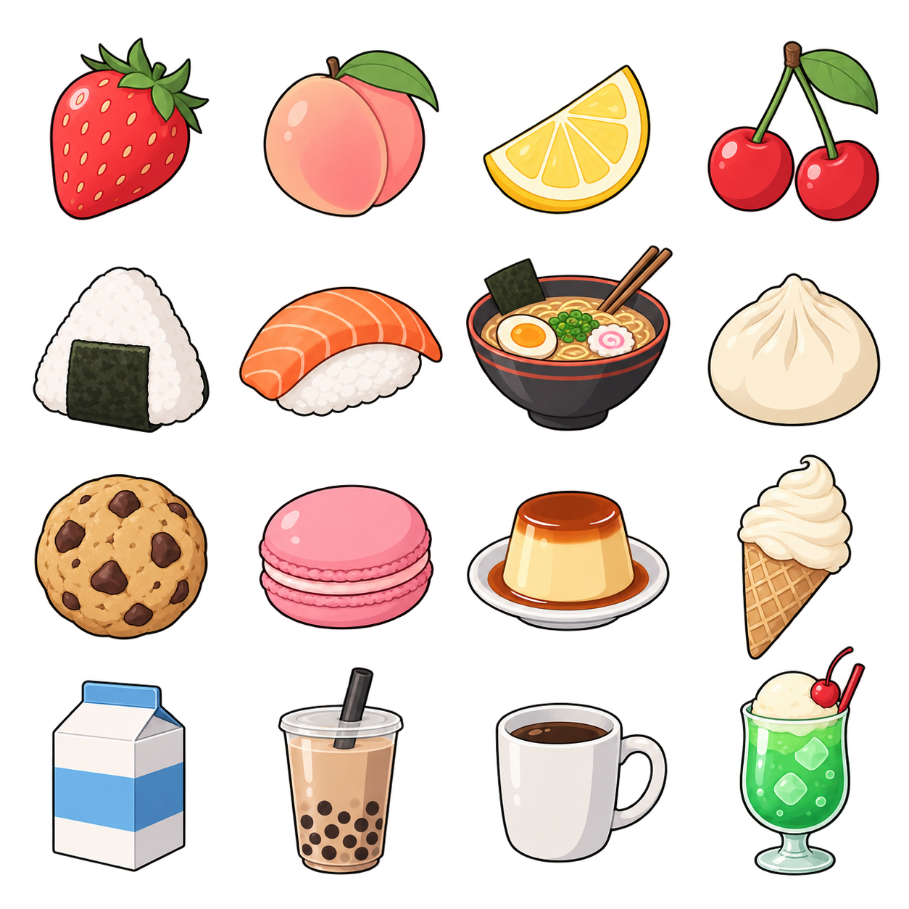
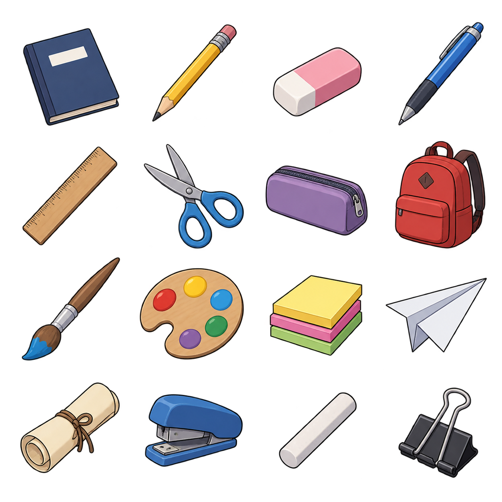
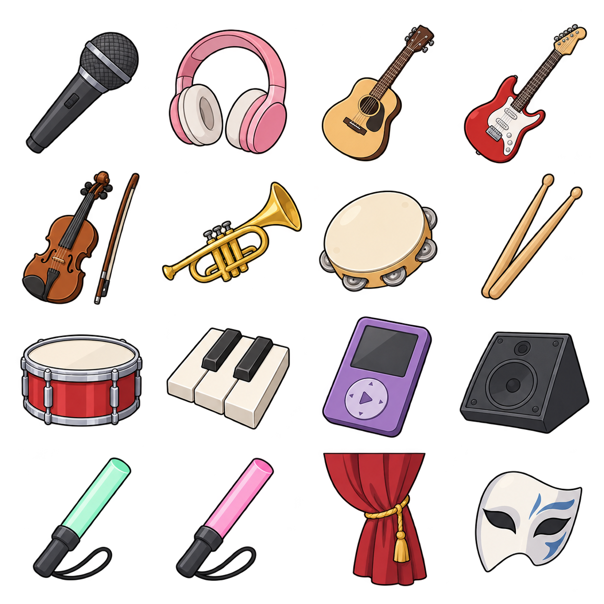
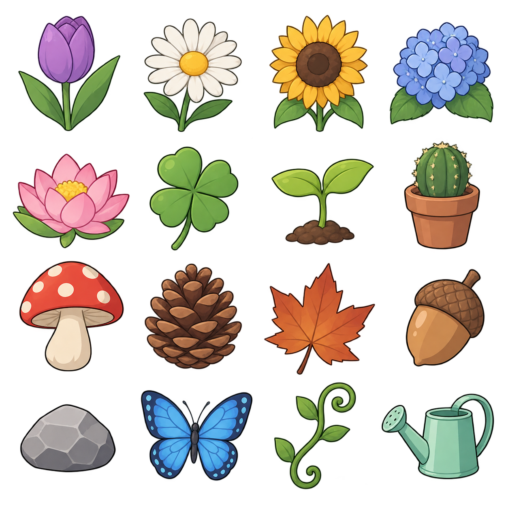
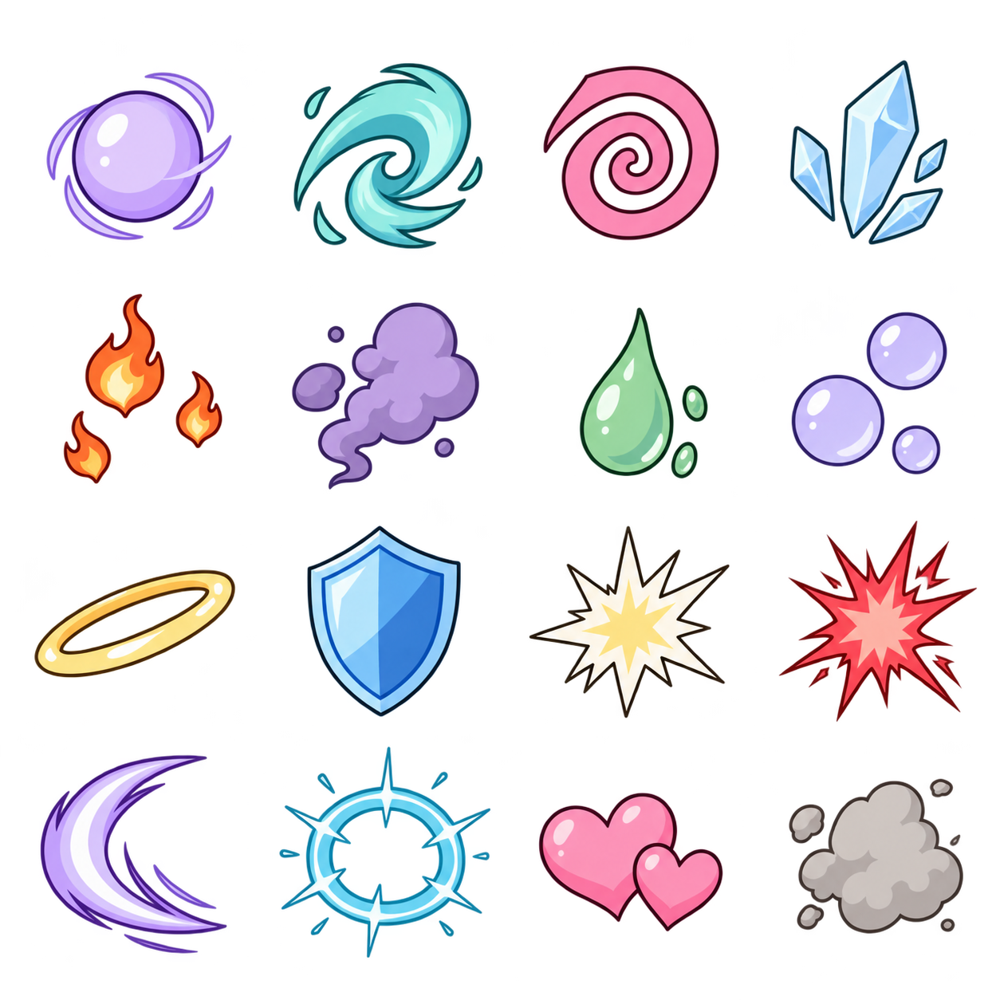
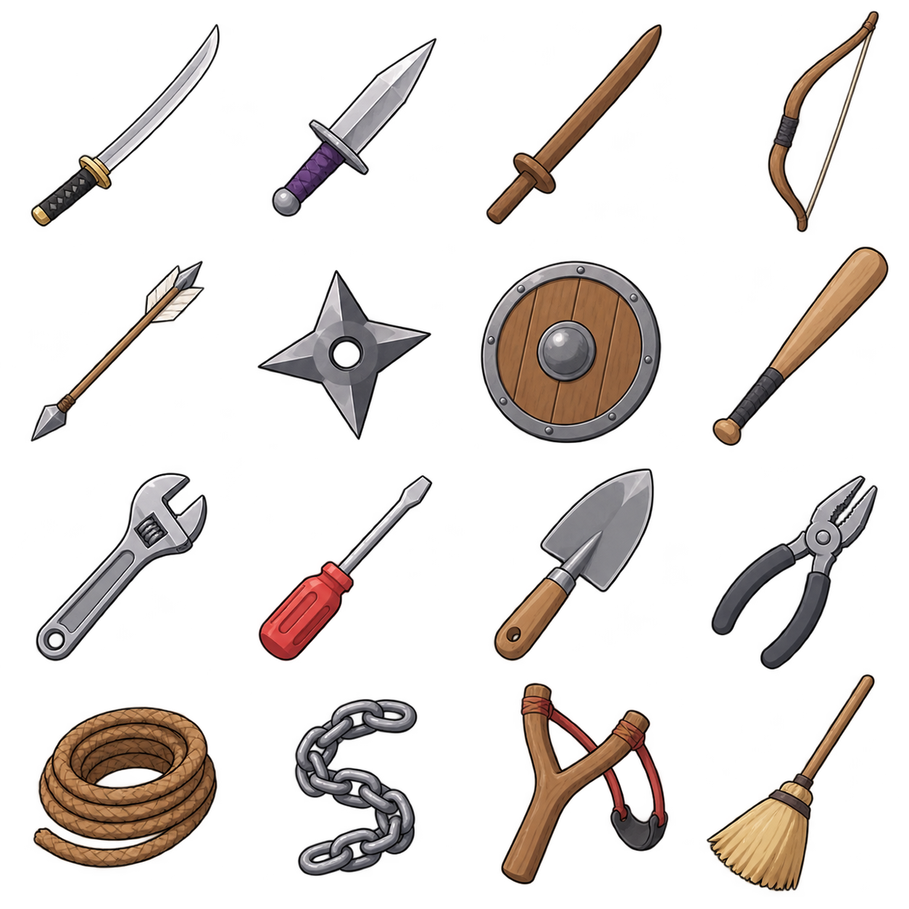
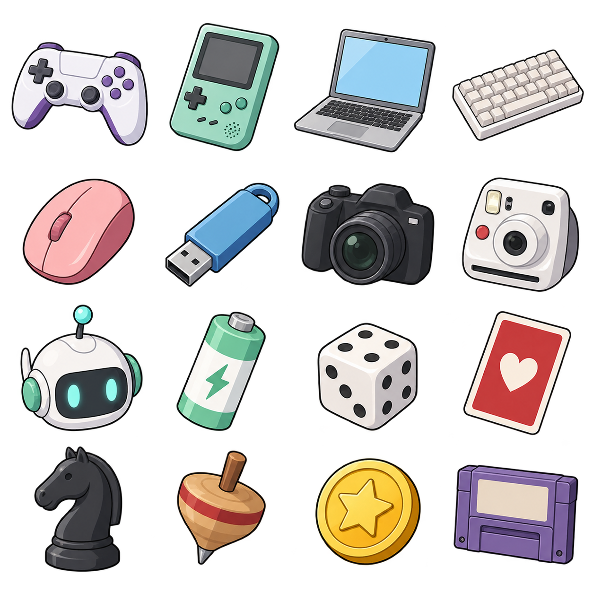
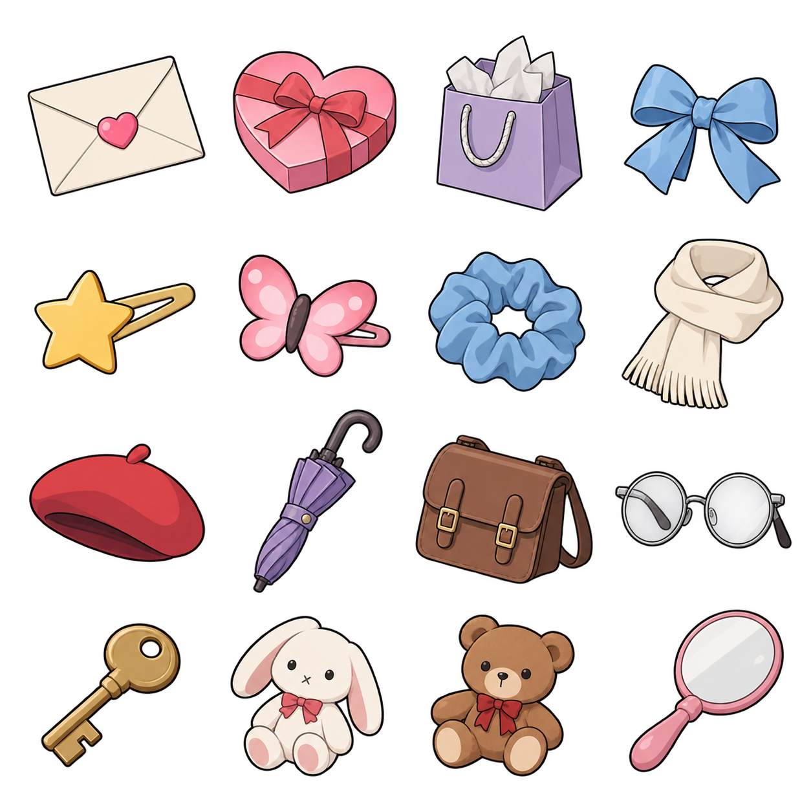
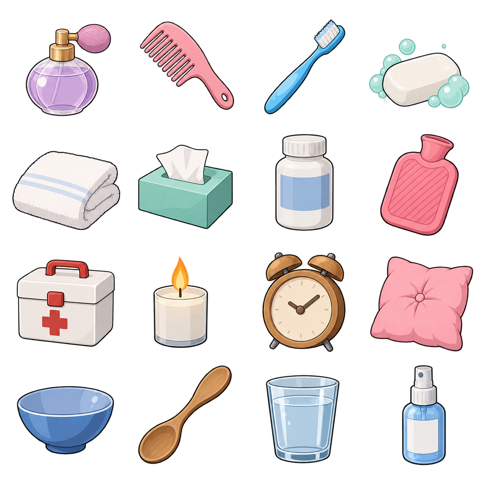
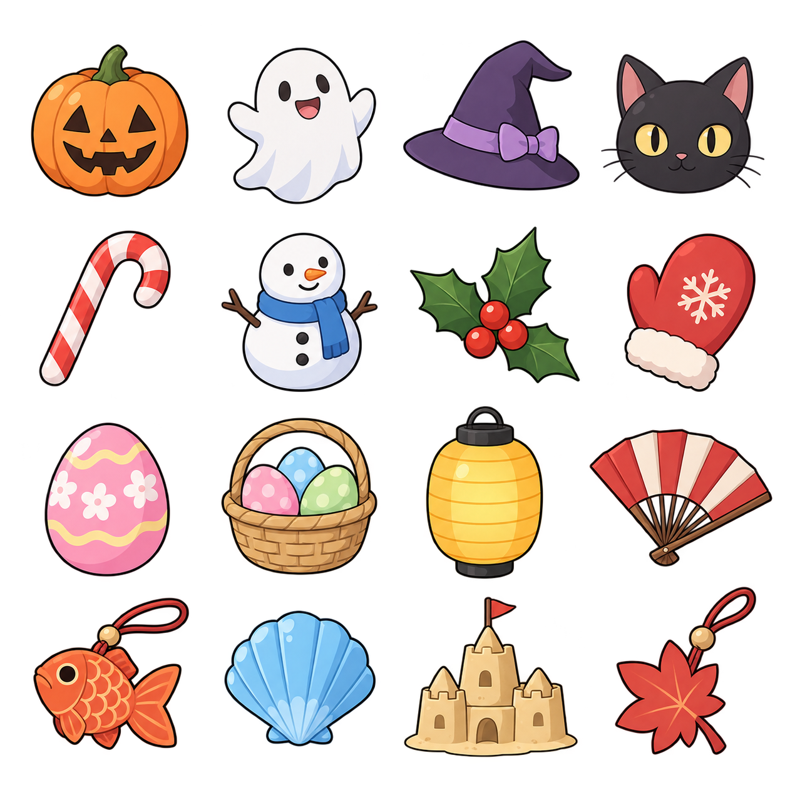

Food and drinks

16 props in sheet order
- strawberry
- peach
- lemon wedge
- pair of cherries
- rice ball wrapped in nori
- salmon sushi piece
- bowl of ramen with chopsticks
- steamed dumpling
- chocolate-chip cookie
- pink macaron
- caramel pudding on small saucer
- vanilla ice-cream cone
- milk carton with blank label
- clear cup of brown milk tea with tapioca pearls
- small white coffee mug
- melon soda in glass with scoop of ice cream
School and art

16 props in sheet order
- closed navy school notebook with blank cover
- yellow pencil
- pink eraser
- blue ballpoint pen
- wooden ruler with ticks but no digits
- steel scissors with blue handles
- small purple pencil case
- red school backpack
- artist paintbrush with blue paint at tip
- wooden paint palette with five color spots
- stack of three colored sticky notes
- white paper airplane
- rolled cream parchment tied with string
- small blue stapler
- piece of white chalk
- silver binder clip
Music and stage

16 props in sheet order
- black handheld microphone
- pink over-ear headphones
- small wooden acoustic guitar
- red electric guitar
- brown violin with bow
- small brass trumpet
- cream tambourine
- pair of wooden drumsticks
- tiny red snare drum
- three ivory and black piano keys
- purple portable music player with blank screen
- small gray stage speaker
- mint glow stick
- pink glow stick
- red theater curtain tied with cord, isolated
- white theatrical half-mask with subtle blue details
Nature and garden

16 props in sheet order
- purple tulip with two leaves
- white daisy with yellow center
- yellow sunflower
- blue hydrangea flower cluster
- pink lotus blossom
- four-leaf clover
- sprouting seedling with two leaves
- small green cactus in terracotta pot
- red spotted mushroom
- pine cone
- brown autumn maple leaf
- acorn with cap
- small smooth gray rock
- blue butterfly with spread wings
- small curled green vine
- mint watering can
Magic and status

16 props in sheet order
- small lavender glowing orb with sharp outline and flat shading
- turquoise swirl of magic
- pink spiral hypnosis symbol
- pale cyan cracked ice crystal
- three orange floating embers
- simple violet smoke puff
- mint poison droplet
- three pale lavender sleep bubbles
- golden halo ring
- small blue protective shield
- white starburst impact with pale yellow center
- red jagged impact burst
- violet crescent slash arc
- cyan circular shockwave ring
- two small linked pink hearts
- gray dust puff with simple contour
Weapons and tools

16 props in sheet order
- simple curved katana with black grip, pointing upper right
- short steel dagger with purple grip
- wooden practice sword
- wooden bow with taut string
- single wooden arrow with white fletching
- four-point steel throwing star
- plain wooden round shield with steel center
- wooden baseball bat
- steel wrench
- flat-head screwdriver with red handle
- garden trowel with wooden handle
- small gray pliers
- coiled brown rope
- single length of steel chain curled into an S
- wooden slingshot with red elastic
- simple wooden broom
Tech and games

16 props in sheet order
- white and purple game controller
- mint handheld game console with blank screen
- open gray laptop with blank blue screen
- compact white keyboard
- pink computer mouse
- small blue USB flash drive
- black digital camera
- white instant camera
- small white robot head with cyan eyes
- mint and white battery
- white six-sided die with black pips
- red playing card face with one simple heart and no lettering
- black chess knight
- small wooden spinning top
- yellow arcade token with simple star stamp
- purple retro game cartridge with blank label
Gifts and accessories

16 props in sheet order
- cream envelope sealed with pink heart
- pink heart-shaped chocolate box
- small lavender gift bag with white tissue
- folded blue silk ribbon
- simple yellow star hair clip
- pink butterfly hair clip
- blue scrunchie
- plain cream scarf folded loosely
- small red beret
- purple folded umbrella
- small brown satchel
- pair of round silver eyeglasses
- simple brass key
- tiny white plush rabbit with pink ears
- tiny brown plush teddy bear
- small round white hand mirror with pink handle
Home and care

16 props in sheet order
- small glass perfume bottle with lavender liquid
- pink comb
- blue toothbrush
- white soap bar with mint bubbles
- folded white towel
- small mint tissue box with one tissue
- plain white medicine bottle with blue blank label
- pink hot-water bottle
- small white first-aid box with red cross
- small white candle with orange flame
- wooden alarm clock with plain hands and no digits
- pink cushion
- blue ceramic bowl
- wooden spoon
- clear drinking glass of water
- small blue spray bottle with blank label
Seasonal extras

16 props in sheet order
- orange jack-o-lantern with simple carved face
- small smiling white cartoon ghost
- purple witch hat with plain ribbon
- black cat face with yellow eyes
- red and white candy cane
- small snowman with blue scarf
- green holly sprig with red berries
- red winter mitten
- pastel pink painted egg
- small straw basket holding three pastel eggs
- yellow festival lantern with no writing
- red-and-white folding paper fan
- goldfish-shaped orange paper charm
- blue seashell
- small sandcastle
- small red maple leaf-shaped charm with short cord